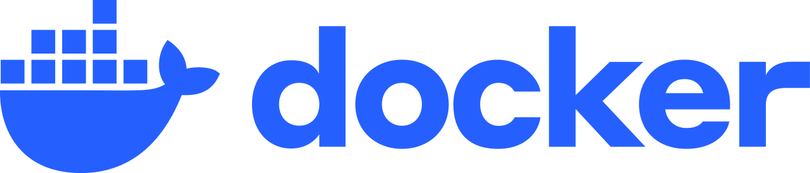
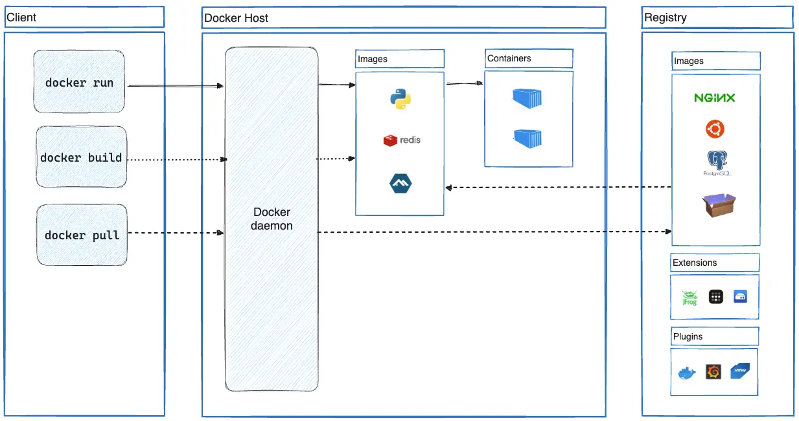
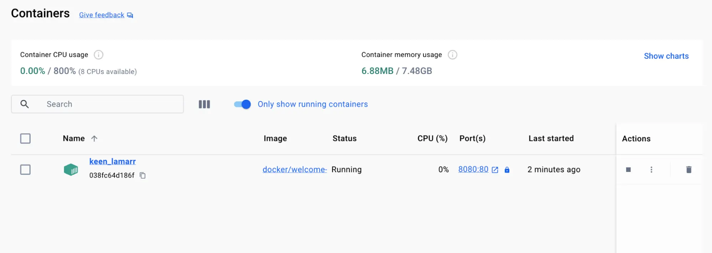

Sezione · Informatica
Docker
Guida pratica a Docker: che cos'è, come installarlo su Windows e
Linux e i comandi che servono davvero per immagini, container, volumi e
Docker Compose. Contenuti verificati su Docker Engine
29.9.3 e Docker Desktop 4.98.0.
29.9.3
e Docker Desktop 4.98.0 (3 novembre 2026), Docker Compose
5.7.0 (2 novembre 2026) e Buildx 0.38.1.
Docker Engine è distribuito con licenza Apache 2.0; Docker Desktop
ha termini d'uso propri.

Che cos'è Docker
Docker è una piattaforma per sviluppare, distribuire ed eseguire applicazioni in container. Un container è un processo isolato che contiene tutto ciò che serve per funzionare: codice, runtime, librerie e configurazione. Non dipende da ciò che è installato sulla macchina host, quindi lo stesso container si comporta allo stesso modo sul portatile dello sviluppatore, nel server di test e in produzione.
L'idea centrale è separare l'applicazione dall'infrastruttura: si costruisce una immagine una volta sola e la si esegue ovunque. I container sono leggeri, si avviano in pochi secondi e se ne possono eseguire molti sullo stesso host.
Container o macchina virtuale
Un container non è una macchina virtuale. La differenza sta nel livello di isolamento:
| Aspetto | Container | Macchina virtuale |
|---|---|---|
| Kernel | Condivide il kernel dell'host. | Ha un sistema operativo guest completo, con il suo kernel. |
| Avvio | Secondi o meno. | Decine di secondi o minuti. |
| Peso | Megabyte: solo applicazione e dipendenze. | Gigabyte: include il sistema operativo. |
| Isolamento | A livello di processo, tramite namespace e cgroup. | A livello hardware, tramite hypervisor. |
| Caso d'uso | Applicazioni, microservizi, ambienti di sviluppo e CI. | Sistemi operativi diversi, isolamento più forte, carichi che richiedono un kernel proprio. |
I due mondi non sono in concorrenza: spesso Docker Desktop esegue i container Linux dentro una macchina virtuale leggera, perché Windows e macOS non hanno un kernel Linux nativo.
I concetti chiave
| Termine | Significato |
|---|---|
| Immagine | Pacchetto immutabile con file, binari, librerie e configurazione. È il modello da cui nasce un container. |
| Container | Un'istanza in esecuzione di un'immagine, isolata dalle altre e dall'host. |
| Dockerfile | File di istruzioni che descrive come costruire un'immagine, strato dopo strato. |
| Layer | Uno strato immutabile dell'immagine. I layer condivisi vengono riusati e messi in cache. |
| Registry | Archivio di immagini. Docker Hub è quello pubblico predefinito; esistono registry privati. |
| Tag | Etichetta di una versione dell'immagine, per esempio nginx:alpine o postgres:17. |
| Volume | Archivio persistente gestito da Docker, indipendente dal ciclo di vita del container. |
| Bind mount | Cartella dell'host montata dentro il container, utile in sviluppo. |
| Rete | Rete virtuale che collega i container tra loro e con l'host. |
| Compose | Strumento che descrive e avvia più container in un file YAML. |
| Docker Engine | Il motore: daemon, API REST e client a riga di comando. |
| Docker Desktop | Applicazione per Windows e macOS (e Linux) che include Engine, Compose, Buildx e interfaccia grafica. |
Come funziona: client, daemon e registry
Il comando docker è un client:
traduce ciò che scrivi in chiamate all'API REST del
daemon (dockerd). Il daemon gestisce
immagini, container, reti e volumi; per eseguire i processi si
appoggia a containerd e runc. Le immagini
arrivano da un registry, di solito Docker Hub.

Immagini, layer e Dockerfile
Un'immagine è immutabile: non si modifica, si crea una nuova immagine a partire da quella esistente. È composta da layer: ogni istruzione del Dockerfile aggiunge uno strato. Se due immagini condividono gli stessi layer, Docker li scarica e li conserva una volta sola.
FROM node:22-alpine
WORKDIR /app
COPY package*.json ./
RUN npm ci --omit=dev
COPY . .
EXPOSE 3000
USER node
CMD ["node", "server.js"]
Il comando docker build esegue il Dockerfile e produce
un'immagine; docker run la trasforma in un container.
I layer sono anche il motivo per cui conviene mettere le istruzioni
che cambiano raramente (dipendenze) prima di quelle che cambiano
spesso (codice).
Docker Desktop
Su Windows e macOS il modo più semplice per iniziare è Docker Desktop: installa Engine, client, Compose, Buildx e una piccola interfaccia grafica per vedere container e immagini, aprire un terminale, controllare log e risorse.

Il flusso di lavoro tipico
# scarica un'immagine e avvia un container in background
docker pull nginx:alpine
docker run -d --name sito -p 8080:80 nginx:alpine
# controlla che sia in esecuzione
docker ps
# apri http://localhost:8080 nel browser, poi ferma e rimuovi
docker stop sito
docker rm sito
Con più servizi conviene descrivere tutto in un file
compose.yaml e usare docker compose up -d.
Il ciclo resta lo stesso: costruisci l'immagine, avvia il
container, guardi i log, modifichi e ricostruisci.
Quale strumento serve
| Strumento | A cosa serve |
|---|---|
| Docker Engine | Il motore e la CLI su Linux e server. È la base di tutto. |
| Docker Desktop | Esperienza completa su Windows e macOS: GUI, WSL 2, Compose, Buildx, aggiornamenti. |
| Docker Compose | Più container descritti in YAML: applicazione, database, cache, rete e volumi. |
| Buildx | Build avanzate con BuildKit, cache remota e immagini multi-piattaforma. |
| Docker Hub | Registry pubblico per cercare, scaricare e pubblicare immagini. |
Versioni e compatibilità
Questa guida è verificata sulle versioni indicate in cima.
I comandi di base sono stabili da anni; le differenze principali
riguardano docker compose (plugin integrato, al posto
del vecchio docker-compose), Buildx e le opzioni di
Docker Desktop. Su distribuzioni Linux molto vecchie può
servire un repository di terze parti o la compilazione dai
sorgenti.
Fonti
Installazione su Windows
Su Windows si usa Docker Desktop: include Docker
Engine, la CLI, Docker Compose, Buildx e un'interfaccia grafica. La
versione documentata è 4.98.0. L'installazione
predefinita è per utente e non richiede
privilegi di amministratore.
Requisiti
- Windows 10 64-bit Enterprise, Pro o Education 22H2 (build 19045), oppure Windows 11 64-bit Enterprise, Pro o Education 23H2 (build 22631) o successivo.
- Processore 64-bit con SLAT, almeno 8 GB di RAM e virtualizzazione abilitata nel BIOS/UEFI.
- WSL 2 versione 2.1.5 o successiva per il backend predefinito; WSL 2.6 o successiva se si usa Enhanced Container Isolation.
- Servizio Windows LanmanServer attivo con avvio automatico.
- Windows Server non è supportato. Windows Home ed Education possono eseguire solo container Linux.
Per utente o per tutti gli utenti
| Aspetto | Per utente (consigliata) | Per tutti gli utenti |
|---|---|---|
| Cartella | %LOCALAPPDATA%\Programs\DockerDesktop | C:\Program Files\Docker\Docker |
| Permessi | Nessun amministratore per installare o aggiornare. | Amministratore per installare e aggiornare. |
| Backend | WSL 2 o Docker VMM (beta). | WSL 2, Hyper-V o Docker VMM. |
| Container Windows | Non supportati. | Supportati. |
| Sicurezza | Superficie d'attacco ridotta, nessun servizio privilegiato. | Richiede un servizio privilegiato con accesso più ampio all'host. |
La modalità scelta al momento dell'installazione non si cambia dall'interfaccia: per passare da una all'altra bisogna disinstallare e reinstallare.
Metodo 1 — Installer ufficiale
- Scarica Docker Desktop Installer.exe (x86_64) dalla pagina ufficiale o dalle note di rilascio.
- Avvia
Docker Desktop Installer.exe. - Scegli la modalità: per utente (predefinita, senza admin) oppure per tutti gli utenti (richiede elevazione).
- Nella pagina Configuration seleziona Use WSL 2 instead of Hyper-V, salvo esigenze diverse.
- Autorizza l'installer e attendi la fine; seleziona Close.
- Avvia Docker Desktop dal menu Start e accetta il contratto di servizio.
L'installazione per tutti gli utenti può aggiungere l'utente
al gruppo docker-users, necessario per i container
Windows e per la gestione della VM Hyper-V:
net localgroup docker-users <utente> /adddocker-users dà accesso al
socket del daemon Docker, che equivale a privilegi di
amministratore sull'host. Aggiungi solo chi ne ha davvero bisogno:
per i container Linux con WSL 2 il gruppo non serve.
Metodo 2 — Riga di comando
Dopo aver scaricato l'installer, da PowerShell:
# installazione per utente, senza privilegi di amministratore
Start-Process 'Docker Desktop Installer.exe' -Wait -ArgumentList 'install', '--user'
# installazione per tutti gli utenti (PowerShell da amministratore)
Start-Process 'Docker Desktop Installer.exe' -Wait -ArgumentList 'install'Opzioni utili dell'installer:
# accetta il contratto e scegli il backend
"Docker Desktop Installer.exe" install --user --accept-license --backend=wsl-2
# installazione silenziosa
"Docker Desktop Installer.exe" install --user --quiet
Altri flag frequenti sono --installation-dir=<percorso>,
--proxy-http-mode=manual e
--override-proxy-http=<url>. L'elenco completo
è nella documentazione ufficiale.
Metodo 3 — winget
winget install --id Docker.DockerDesktop -e
winget upgrade --id Docker.DockerDesktop -eIl pacchetto è mantenuto da Docker e la versione disponibile su winget può arrivare con qualche giorno di ritardo rispetto al sito ufficiale. In alternativa c'è la versione sul Microsoft Store.
Preparare WSL 2
Docker Desktop usa WSL 2 come backend predefinito. Controlla la versione e aggiorna se necessario, da PowerShell:
wsl --version
wsl --update
wsl --set-default-version 2
Se WSL non è installato, wsl --install lo
aggiunge e potrebbe richiedere un riavvio. In ambienti con
Microsoft Store bloccato si può usare il pacchetto MSI dalle
release ufficiali di WSL su GitHub.
Primo avvio
- Cerca Docker Desktop nel menu Start e avvialo.
- Accetta il contratto di servizio: senza accettazione Docker Desktop non parte.
- Completa o salta l'onboarding; l'accesso a Docker Hub è facoltativo per l'uso locale.
- Apri Settings › Resources › WSL Integration e abilita le distribuzioni che devono usare Docker.
- Verifica da un terminale che il motore risponda.
Verifica
docker --version
docker compose version
docker buildx version
docker run hello-world
docker info
docker run hello-world scarica una piccola immagine,
avvia un container e stampa un messaggio di conferma. Se lo vedi,
il motore funziona.
Configurazione consigliata
- Settings › General: avvio automatico con il sistema, se lo vuoi; Resource Saver per ridurre i consumi quando Docker è inattivo.
- Settings › Resources: CPU, memoria e disco assegnati alla VM; aumentali se i build sono lenti o i container finiscono in OOM.
- Settings › Resources › File sharing: aggiungi solo le cartelle che devono essere montate nell'host.
- Settings › Docker Engine: configurazione JSON del daemon, per esempio registry mirror o log driver.
- Settings › Proxies: proxy aziendale, se la rete lo richiede.
Aggiornare e disinstallare
# aggiornamento da winget
winget upgrade --id Docker.DockerDesktop -e
# disinstallazione da winget
winget uninstall --id Docker.DockerDesktop -eIn alternativa usa Settings › Software updates dentro Docker Desktop e Impostazioni › App di Windows per la disinstallazione. Le immagini e i volumi non vengono cancellati automaticamente: se vuoi ripartire da zero, rimuovili prima.
Problemi comuni
- «Docker Desktop non parte»: verifica che la virtualizzazione sia attiva nel BIOS/UEFI e che WSL 2 sia aggiornato.
- «Cannot connect to the Docker daemon»: Docker Desktop non è avviato o il motore è ancora in fase di startup.
dockernon riconosciuto: riapri il terminale dopo l'installazione, così il PATH viene aggiornato.- WSL lento o bloccato: esegui
wsl --updatee riavvia Docker Desktop. - Porta già occupata: cambia la porta host nel mapping, per esempio
-p 8081:80.
Installazione su Linux
Su Linux si installa Docker Engine dal repository
ufficiale della distribuzione. La versione documentata è
29.9.3. In alternativa si può usare Docker
Desktop for Linux, che aggiunge l'interfaccia grafica e
l'integrazione con il desktop.
Requisiti (Ubuntu)
- Ubuntu 64-bit 22.04 LTS, 24.04 LTS, 26.04 LTS o 26.10.
- Architetture supportate: x86_64 (amd64), arm64, armhf, s390x e ppc64le.
- Accesso
sudoper installare e avviare il servizio. - Le derivate come Linux Mint non sono supportate ufficialmente, anche se spesso funzionano.
ufw e firewalld.
Docker supporta solo iptables-nft e
iptables-legacy: le regole create con nft
non funzionano. Metti le eccezioni nella catena
DOCKER-USER.
Rimuovere i pacchetti in conflitto
Prima di installare la versione ufficiale, elimina i pacchetti forniti dalla distribuzione, che possono entrare in conflitto:
sudo apt remove $(dpkg --get-selections docker.io docker-compose docker-compose-v2 docker-doc docker-buildx podman-docker containerd runc | cut -f1)
apt può rispondere che alcuni pacchetti non sono
installati: è normale. Immagini, container, volumi e reti in
/var/lib/docker/ non vengono rimossi automaticamente.
Metodo 1 — Repository apt ufficiale
Configura la chiave GPG e il repository:
sudo apt update
sudo apt install ca-certificates curl
sudo install -m 0755 -d /etc/apt/keyrings
sudo curl -fsSL https://download.docker.com/linux/ubuntu/gpg -o /etc/apt/keyrings/docker.asc
sudo chmod a+r /etc/apt/keyrings/docker.asc
sudo tee /etc/apt/sources.list.d/docker.sources <<EOF
Types: deb
URIs: https://download.docker.com/linux/ubuntu
Suites: $(. /etc/os-release && echo "${UBUNTU_CODENAME:-$VERSION_CODENAME}")
Components: stable
Architectures: $(dpkg --print-architecture)
Signed-By: /etc/apt/keyrings/docker.asc
EOF
sudo apt updatePoi installa Engine, CLI, containerd, Buildx e Compose:
sudo apt install docker-ce docker-ce-cli containerd.io docker-buildx-plugin docker-compose-plugin
Per installare una versione specifica, elenca quelle disponibili e
installa il pacchetto con la versione scelta. L'esempio seguente
usa Ubuntu 24.04 (noble): sostituisci la stringa con quella della
tua release. Non è un blocco permanente: per impedire gli
aggiornamenti usa sudo apt-mark hold docker-ce.
apt list --all-versions docker-ce
VERSION_STRING=5:29.9.3-1~ubuntu.24.04~noble
sudo apt install docker-ce=$VERSION_STRING docker-ce-cli=$VERSION_STRING containerd.io docker-buildx-plugin docker-compose-pluginMetodo 2 — Script di comodo
Lo script ufficiale installa l'ultima versione stabile in modo non interattivo. È pensato per ambienti di sviluppo e test, non per la produzione.
curl -fsSL https://get.docker.com -o get-docker.sh
sudo sh ./get-docker.sh --dry-run
sudo sh get-docker.sh--dry-run mostra i passaggi senza modificare il
sistema. Lo script non è pensato per aggiornare
un'installazione esistente.
Avviare e verificare
sudo systemctl status docker
sudo systemctl enable --now docker
sudo docker run hello-world
Se hello-world stampa il messaggio di conferma,
l'installazione è riuscita. Controlla anche le versioni:
docker --version
docker compose version
docker buildx version
docker infoUsare Docker senza sudo
Per impostazione predefinita solo root può
usare il socket di Docker. Aggiungi il tuo utente al gruppo
docker e riapri la sessione:
sudo groupadd docker
sudo usermod -aG docker $USER
newgrp docker
docker run hello-worlddocker dà di fatto privilegi di root:
chi può usare il socket può montare l'intero
filesystem dell'host. Per un isolamento maggiore valuta la
modalità rootless, che esegue il daemon con
i permessi dell'utente.
Altre distribuzioni
I passaggi cambiano con il gestore di pacchetti. Queste le procedure ufficiali; su Debian, Fedora e RHEL il repository Docker va aggiunto prima, come descritto nella guida della distribuzione.
| Distribuzione | Comando di installazione | Guida |
|---|---|---|
| Debian | sudo apt install docker-ce docker-ce-cli containerd.io docker-buildx-plugin docker-compose-plugin |
Debian |
| Fedora | sudo dnf install docker-ce docker-ce-cli containerd.io docker-buildx-plugin docker-compose-plugin |
Fedora |
| RHEL, Rocky, AlmaLinux | sudo dnf install docker-ce docker-ce-cli containerd.io docker-buildx-plugin docker-compose-plugin |
RHEL |
| CentOS | sudo dnf install docker-ce docker-ce-cli containerd.io docker-buildx-plugin docker-compose-plugin |
CentOS |
Arch Linux, openSUSE e Alpine forniscono pacchetti nei propri
repository (rispettivamente pacman,
zypper e apk). Sono mantenuti dalla
distribuzione, non da Docker, e possono essere più vecchi:
per questi sistemi segui la documentazione della distro. Su
qualsiasi distribuzione si possono anche installare i
binari statici ufficiali.
Aggiornare e disinstallare
# aggiornamento
sudo apt update
sudo apt install --only-upgrade docker-ce docker-ce-cli containerd.io docker-buildx-plugin docker-compose-plugin
# disinstallazione
sudo apt purge docker-ce docker-ce-cli containerd.io docker-buildx-plugin docker-compose-plugin docker-ce-rootless-extras
# pulizia del repository e della chiave (facoltativa)
sudo rm /etc/apt/sources.list.d/docker.sources
sudo rm /etc/apt/keyrings/docker.asc
# rimozione dei dati (irreversibile)
sudo rm -rf /var/lib/docker
sudo rm -rf /var/lib/containerd
Dopo l'aggiornamento riavvia il servizio con
sudo systemctl restart docker.
Problemi comuni
- «permission denied» su
/var/run/docker.sock: aggiungi l'utente al gruppodockere riapri la sessione. - «Cannot connect to the Docker daemon»: il servizio non è attivo; usa
sudo systemctl start docker. - «port is already allocated»: un'altra applicazione usa la porta; cambia la porta host nel mapping.
- Spazio esaurito: controlla con
docker system dfe libera condocker system prune. - Build lente: aggiungi un
.dockerignoree sfrutta la cache dei layer.
Digita per filtrare la cheat sheet e i comandi qui sotto.
Cheat sheet
I comandi che userai il 90% delle volte.
| Comando | Cosa fa |
|---|---|
docker --version | Mostra la versione del client. |
docker info | Mostra lo stato del motore e le risorse disponibili. |
docker pull <immagine> | Scarica un'immagine da un registry. |
docker images | Elenca le immagini locali. |
docker run <immagine> | Crea e avvia un container da un'immagine. |
docker run -d --name web -p 8080:80 nginx:alpine | Avvia in background un container con nome e porta pubblicata. |
docker ps | Elenca i container in esecuzione. |
docker ps -a | Elenca anche i container fermati. |
docker stop <container> | Ferma un container in modo ordinato. |
docker start <container> | Avvia un container fermo. |
docker rm <container> | Rimuove un container fermo. |
docker rmi <immagine> | Rimuove un'immagine locale. |
docker logs -f <container> | Segue l'output di un container in tempo reale. |
docker exec -it <container> sh | Apre una shell dentro un container in esecuzione. |
docker inspect <container> | Mostra la configurazione completa in JSON. |
docker build -t nome:tag . | Costruisce un'immagine dal Dockerfile nella cartella corrente. |
docker push utente/immagine:tag | Pubblica un'immagine su un registry. |
docker compose up -d | Avvia in background i servizi definiti in compose.yaml. |
docker compose down | Ferma e rimuove i container e la rete del progetto. |
docker compose logs -f | Segue i log di tutti i servizi. |
docker volume ls | Elenca i volumi. |
docker network ls | Elenca le reti. |
docker system df | Mostra lo spazio usato da immagini, container e volumi. |
docker system prune | Rimuove le risorse inutilizzate. |
<...> indica un valore da sostituire; le parentesi
quadre sono opzionali. I nomi dei container si possono abbreviare
con il prefisso dell'ID, purché sia univoco.
Primi passi
docker --version
docker version
docker info
docker run hello-world
docker run -it --rm alpine shImmagini
docker pull nginx:alpine
docker pull postgres:17
docker images
docker image ls
docker image inspect nginx:alpine
docker tag nginx:alpine utente/nginx:alpine
docker push utente/nginx:alpine
docker rmi nginx:alpine
docker image prune
docker image prune -a
docker save -o nginx.tar nginx:alpine
docker load -i nginx.tarlatest. Nei progetti è meglio essere espliciti,
per esempio postgres:17, così un aggiornamento
non cambia il comportamento senza preavviso.
Container
docker run nginx:alpine
docker run -d --name web -p 8080:80 nginx:alpine
docker run -it --rm alpine sh
docker run --rm -v "$PWD":/app -w /app node:22-alpine npm test
docker ps
docker ps -a
docker start web
docker stop web
docker restart web
docker pause web
docker unpause web
docker rm web
docker rm -f web
docker rename web sito| Opzione | Effetto |
|---|---|
-d | Esegue il container in background (detached). |
-it | Modalità interattiva con un terminale TTY. |
--rm | Rimuove il container quando termina. |
--name | Assegna un nome leggibile. |
-p host:container | Pubblica una porta del container sull'host. |
-v origine:destinazione | Monta un volume o una cartella dell'host. |
--env | Passa una variabile d'ambiente. |
--network | Collega il container a una rete. |
Log e ispezione
docker logs web
docker logs -f --tail 100 web
docker exec -it web sh
docker exec -it web env
docker inspect web
docker inspect --format '{{.State.Status}}' web
docker stats
docker top web
docker port web
docker diff webCopiare file
docker cp file.txt web:/app/file.txt
docker cp web:/app/report.txt ./report.txt
docker cp web:/app/logs ./logsVolumi e bind mount
docker volume create dati
docker volume ls
docker volume inspect dati
docker run -d --name db -v dati:/var/lib/postgresql/data postgres:17
docker run --rm -v dati:/dati alpine ls -la /dati
docker volume rm dati
docker volume prune
# bind mount in sola lettura per lo sviluppo
docker run --rm -v "$PWD/sito":/usr/share/nginx/html:ro -p 8080:80 nginx:alpine| Tipo | Quando usarlo |
|---|---|
| Volume | Dati persistenti gestiti da Docker: database, upload, cache condivisa. |
| Bind mount | Cartella dell'host montata nel container: sviluppo, configurazioni, codice live. |
| tmpfs | Dati solo in memoria, cancellati allo stop: segreti temporanei e cache. |
Reti
docker network ls
docker network create app-net
docker network inspect app-net
docker run -d --name db --network app-net -e POSTGRES_PASSWORD=esempio postgres:17
docker run -d --name api --network app-net -p 3000:3000 mia-api
docker network connect app-net web
docker network disconnect app-net web
docker network rm app-net
docker network prune
Sulla stessa rete i container si raggiungono con il
nome: api può contattare
db sulla porta 5432 senza conoscere
l'indirizzo IP.
Docker Compose
docker compose version
docker compose up
docker compose up -d
docker compose up --build
docker compose ps
docker compose logs -f
docker compose logs -f api
docker compose exec api sh
docker compose stop
docker compose restart
docker compose down
docker compose down -v
docker compose pull
docker compose build
docker compose configEsempio di compose.yaml con un sito e un database:
services:
web:
image: nginx:alpine
ports:
- "8080:80"
db:
image: postgres:17
environment:
POSTGRES_PASSWORD: esempio
volumes:
- dati:/var/lib/postgresql/data
volumes:
dati:docker compose down -v elimina anche i volumi del
progetto, quindi i dati del database. Usalo solo quando vuoi
ripartire da zero.
Dockerfile
FROM node:22-alpine
WORKDIR /app
COPY package*.json ./
RUN npm ci --omit=dev
COPY . .
EXPOSE 3000
USER node
CMD ["node", "server.js"]Esempio di .dockerignore per non copiare file inutili:
node_modules
.git
.env
dist
*.logBuild e Buildx
docker build -t mia-app:1.0 .
docker build -t mia-app:1.0 -f Dockerfile.prod .
docker build --build-arg NODE_ENV=production -t mia-app:1.0 .
docker buildx ls
docker buildx create --name multi --use
docker buildx inspect --bootstrap
docker buildx build --platform linux/amd64,linux/arm64 -t utente/mia-app:1.0 --push .--push o salvato con
--output: un'immagine multi-arch non si carica nel
demone locale con il semplice --load.
Pulizia e spazio
docker system df
docker system df -v
docker system prune
docker system prune -a
docker system prune -a --volumes
docker container prune
docker image prune -a
docker volume prune
docker network prune
docker builder prunedocker system prune -a --volumes rimuove tutte le
immagini non usate, i container fermi, le reti e i volumi non
collegati. Controlla prima con docker system df e
assicurati di non avere dati importanti solo nei volumi.
Risorse e sicurezza
Gli esempi usano alpine per mostrare i flag senza
dipendere da una particolare applicazione:
docker run --rm --memory=512m --cpus=1.5 alpine sh -c "echo ok"
docker run --rm --read-only --tmpfs /tmp alpine sh -c "echo ok > /tmp/prova"
docker run --rm --user 1000:1000 alpine id
docker run --rm --cap-drop ALL alpine sh -c "echo ok"
docker run --rm --security-opt no-new-privileges alpine sh -c "echo ok"- Esegui i processi con un utente non privilegiato (
USERnel Dockerfile). - Riduci le capability e monta il filesystem in sola lettura quando possibile.
- Non inserire segreti nell'immagine: usa variabili d'ambiente, file montati o un secret manager.
- Aggiorna regolarmente le immagini di base e analizza le vulnerabilità con Docker Scout.
- Pubblica solo le porte necessarie e limita l'accesso al socket del daemon.
# solo con Docker Desktop o con il plugin Scout installato
docker scout quickview nginx:alpine
docker scout cves nginx:alpineWorkflow quotidiano
# 1. scrivi Dockerfile e compose.yaml
docker build -t mia-app:dev .
# 2. prova il container in locale
docker run --rm -p 3000:3000 mia-app:dev
# 3. passa a Compose per l'ambiente completo
docker compose up -d --build
docker compose logs -f
docker compose downSe qualcosa va storto
| Situazione | Cosa fare |
|---|---|
| «Cannot connect to the Docker daemon» | Avvia Docker Desktop oppure sudo systemctl start docker. |
«permission denied» su docker.sock | Aggiungi l'utente al gruppo docker, poi riapri la sessione. |
| «port is already allocated» | Cambia la porta host con -p o ferma il processo che la occupa. |
| Il container esce subito | Guarda docker logs <container> e controlla CMD ed ENTRYPOINT. |
| Lo spazio su disco è finito | docker system df, poi docker system prune con cautela. |
| Impossibile scaricare un'immagine | Verifica nome e tag, il registry e docker login se è privato. |
| Build lentissima | Aggiungi .dockerignore, ordina bene i layer e usa la cache di BuildKit. |
| WSL 2 non funziona su Windows | wsl --update, verifica la virtualizzazione e riavvia Docker Desktop. |